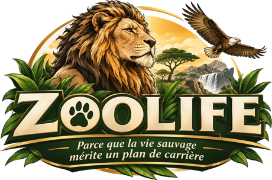
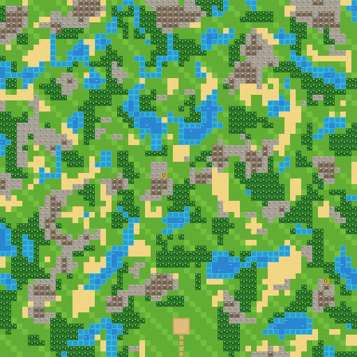
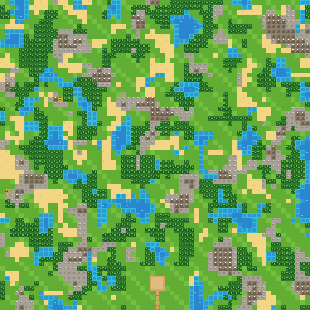

DÉV. ▾
RAPPORT ANNUELEXERCICE 2026

Bâtissez le zoo le plus rentable de la vallée,
avec le personnel que vous méritez.
SOMMAIRE
IJOUER
01Partie classiquevous + 1 à 3 IA
02Réserve naturelleterrain tel quel
03Gestion libreseul, sans fin
04Multijoueur2 à 4 joueurs
IIDÉFIS · LA MÊME PARTIE POUR TOUS
05Défi de la semaine9/11fin dans 3 j 3 h
06Défis permanents4 cartes · classements
IIIAPPRENDRE
07Tutorielavec Hubert
08Règles et glossaire
DANIEL
52 parties · 26 victoires · record 151
Statistiques ›
« Un collaborateur fatigué est un collaborateur qui a travaillé. » H. de la Marge
Document réservé aux collaborateursCONFIDENTIEL
01 · Partie classique~14 jours
Premier à 120 de réputation. Le terrain s'aménage : creuser des bassins, planter, dérocher.
Terrain aménageableObjectif 120Vous + IA
Adversaires
PanZoo, Safari Capital, BioLand
Difficulté
Carte

54953
↻ Autre carte
Forêt 21 % · eau 13 % · roche 11 %
Signer la prise de poste ›
NOTE DE SERVICE · DÉFI DE LA SEMAINE

Semaine du 9/11
Réserve naturelle
3 j 03 h 14
avant dimanche 23 h 59
Votre rang : 14e sur 52 · record 112
Voir le défi ›
Vainqueur de la semaine passée : Margaux_R (163) · Revoir sa partie